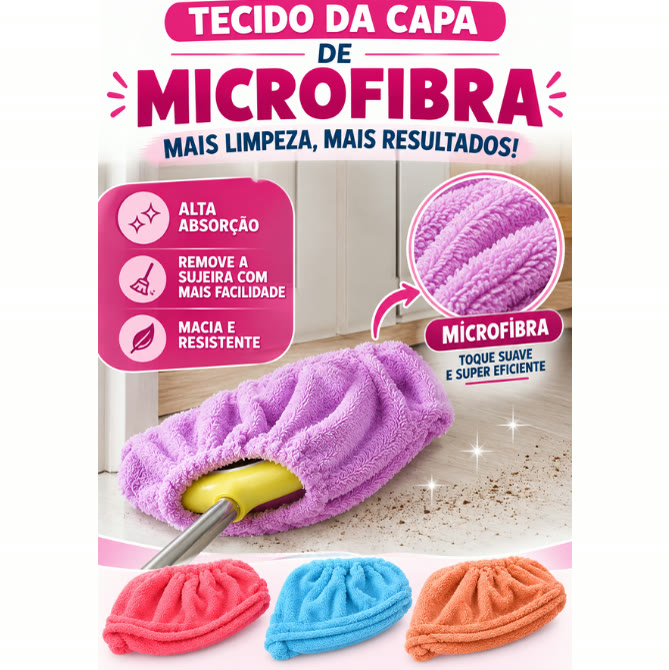
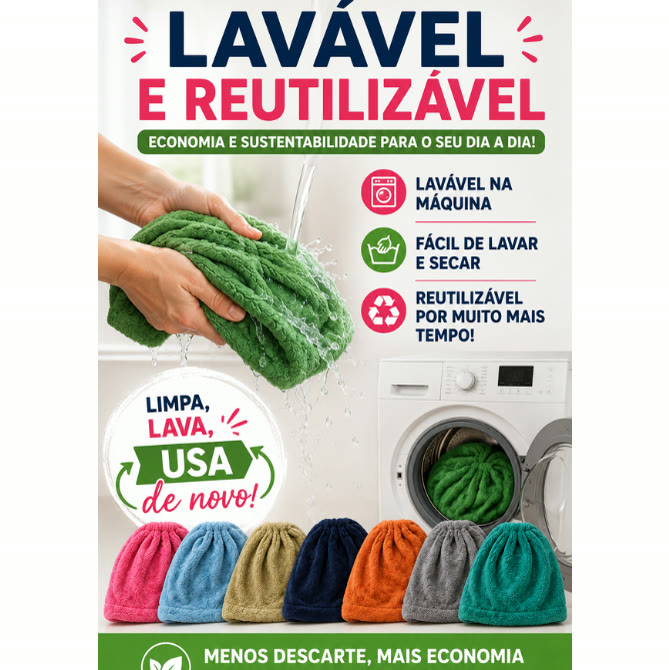
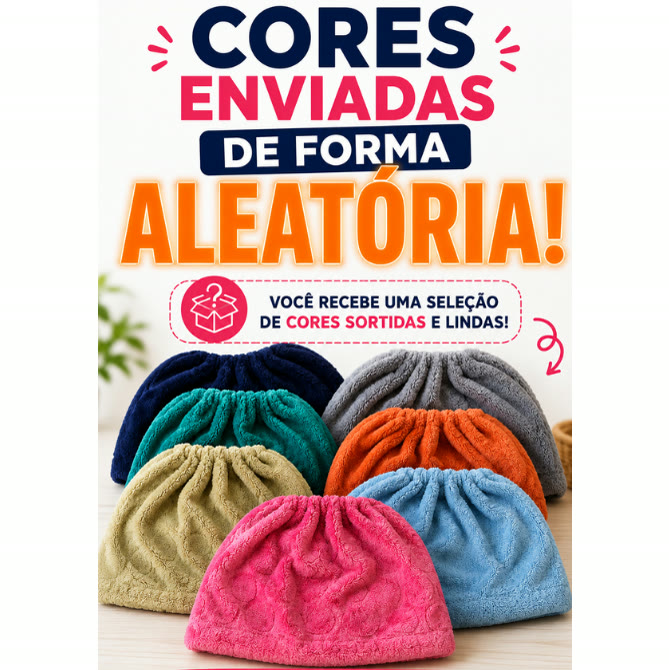

Achado nº 41
Confesso: vivo amarrando pano de prato no rodo.
Capa de pano de microfibra para vassoura e rodo, lavável e reutilizável
★ 4,7 · mais de 4.300 avaliações na Shopee




O que diz a página oficial do produto
- É uma capa de pano de microfibra com elástico que veste a vassoura ou o rodo
- Tem 36 cm de largura; segundo o anúncio, serve em diversos modelos de vassoura e rodo
- Segundo o anúncio, pode ser usada seca para tirar o pó ou levemente úmida
- Segundo o anúncio, tira poeira, cabelo e pelo de animal e não risca as superfícies
- Segundo o anúncio, serve para piso, parede, teto, móveis, armários, portas e janelas
- É lavável e reutilizável; segundo as fotos do anúncio, pode ir à máquina de lavar
- As cores são enviadas de forma aleatória
- É vendida avulsa ou em kit
- Na Shopee, tem nota 4,7 com mais de 4.300 avaliações e mais de 7 mil vendidos
Link de afiliado: se você comprar por ele, a Achadaria pode receber uma comissão, sem custo extra para você. Preço, estoque e entrega são da loja e podem mudar; confira lá antes de comprar.